CRISTO SALVADOR
CRISTO SALVADOR

 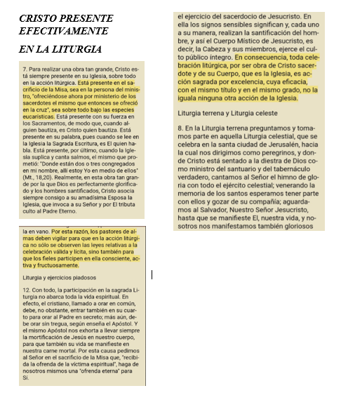
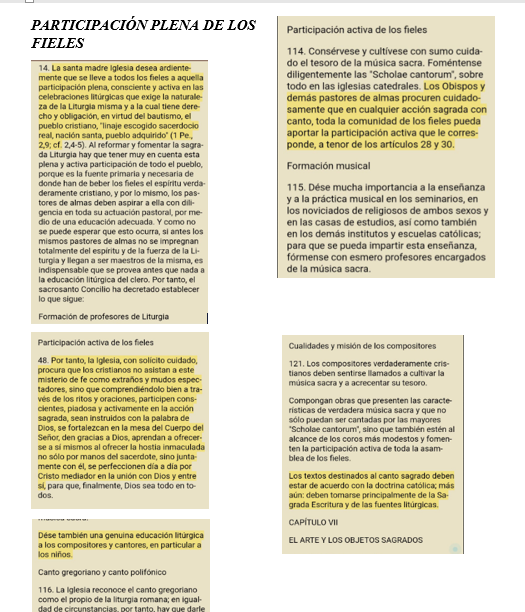
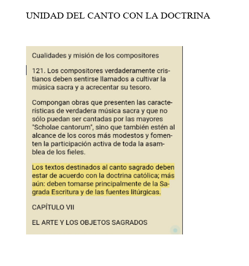
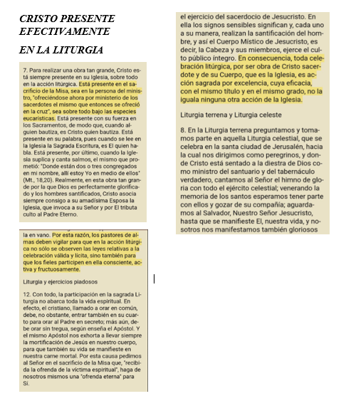
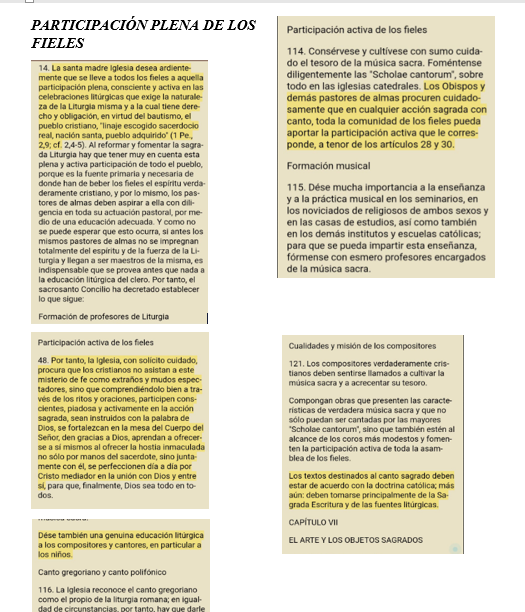
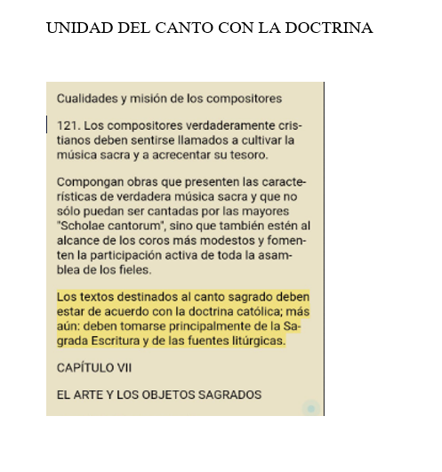

 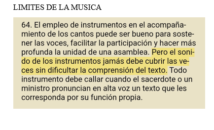
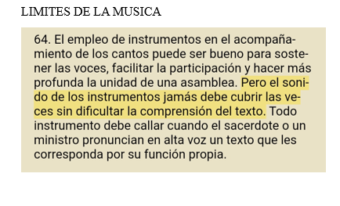
 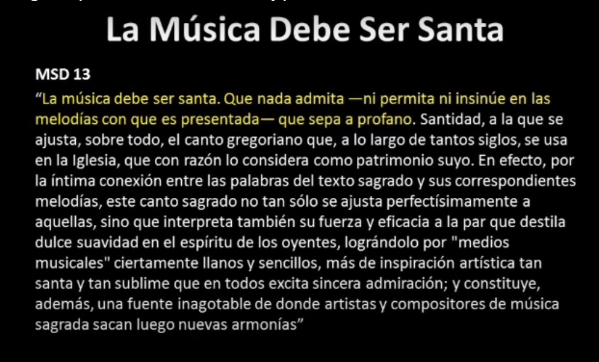
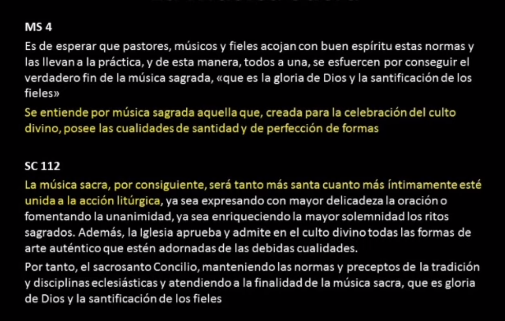
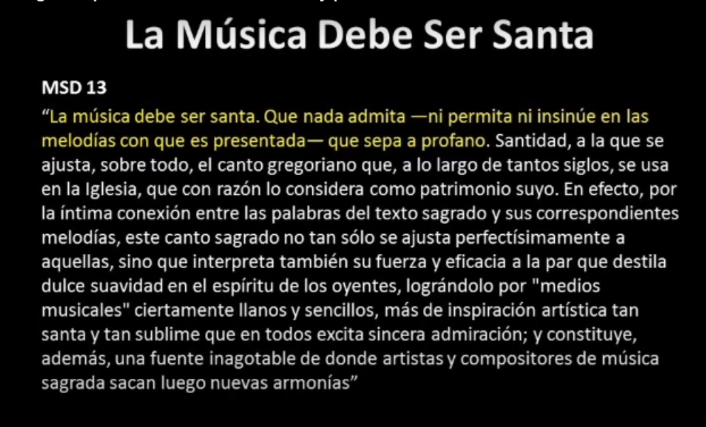
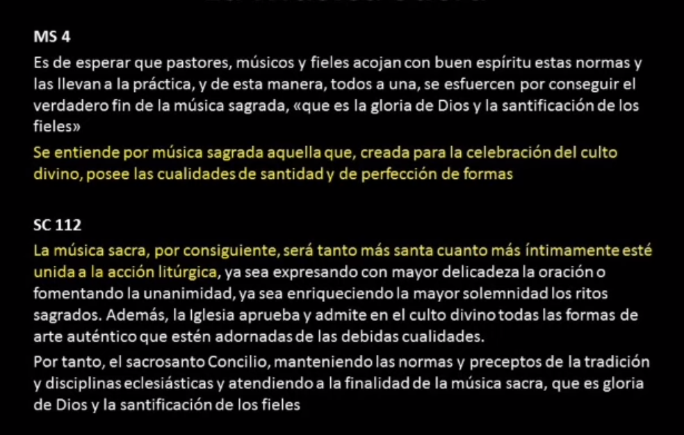
*1903 Tra le Sollecitudini (Motu Proprio) , Papa S. Pío X
1928 Culto Divino (Constitución Apostólica), Papa Pío XI
1943 Místicos del Cuerpo de Cristo (Encíclica), Papa Pío XII
1947 Mediador de Dios (Encíclica), Papa Pío XII
1948 El Papa Pío XII crea Comisión para la Reforma Litúrgica.
1951 Vigilia Pascual restaurada por el Papa Pío XII.
1955 Las Grandes Redenciones (Semana Santa), Papa Pío XII
1955 La Disciplina de la Música Sacra (Encíclica), Papa Pío XII
1958 Sobre la Música Sacra y la Sagrada Liturgia(Instrucción sobre Música Sacra y Liturgia Sagrada, Congregación para los Ritos)
*1963 Sacrosanctum Concilium (Constitución del Concilio Vaticano II sobre la Sagrada Liturgia)
1964 Sagrada Liturgia (Motu Proprio) , Papa Pablo VI
1964 Inter Oecumenici (Instrucción I sobre Constitución sobre la Liturgia), Sagrada Congregación para los Ritos
*1967 Musicam Sacram (Instrucción sobre Música), Congregación para los Ritos
1967 Tres Abhinc Annos (Instrucción II sobre la Constitución sobre la Liturgia), Sagrada Congregación para los Ritos
1970 Instrucción General para el Misal Romano , Papa Pablo VI
1970 Instituciones Litúrgicas(Instrucción III sobre la Constitución sobre la Liturgia), Congregación para el Culto Divino
1974 Carta a los Obispos sobre el Repertorio Mínimo del Canto Llano, Congregación para el Culto Divino
2002 Instrucción General sobre el Misal Romano
2003 Quirógrafo de Juan Pablo II sobre el Motu Proprio de 1903 del Papa San Pío X (el documento fundacional sobre la reforma de la música sacra)
2007 Sacramentum Caritatis , Benedicto XVI